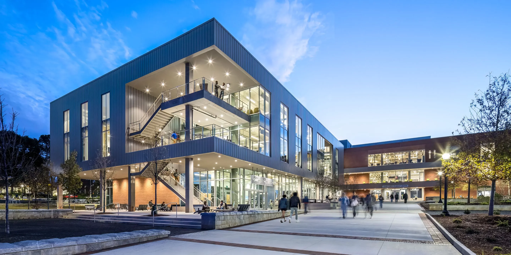

We provide technical and integrated support for owners, architects, engineers and building users pursuing advanced high-performance green building goals.
Established in 2009, RBGB brings decades of HVAC, green building, LEED, energy modeling, commissioning and sustainable operations experience to projects across new and existing buildings.

Every project is a journey of discovery, shaped by the building, the budget, the client’s goals and the opportunities uncovered along the way.
From early conversations to project delivery and completion, we use focused meetings, site visits, document reviews, analysis and strategic guidance to help teams make clear decisions.
Jeff Ross-Bain
President / PE / LEED Fellow
Jeff Ross-Bain founded RBGB in 2009 and brings deep experience in HVAC design, high-performance green buildings, LEED, energy modeling and sustainable operations.
He is active in advancing the profession through standards committees, teaching, workshops and technical leadership in zero energy and high-performance building practice.
The History
RBGB was established in 2009 by Jeff Ross-Bain. The firm provides expert technical and integrated support services that help owners, architects, engineers and building users establish and meet their advanced high-performance green building goals. RBGB has offices in Atlanta, GA and Charleston, SC.
Jeff Ross-Bain has over 30 years of experience in commercial and industrial HVAC design and applications. Since 2001, Jeff has worked exclusively in the field of high-performance green buildings.
Jeff is very active in the advancement of his industry and recently stepped down from an 8-year stint as the Working Group Chair and a Voting Member for ASHRAE Standard 189.1: Standard for the Design of High-Performance Green Buildings, and was a Board Member of the Green Chamber of the South. Jeff is currently teaching a Master’s Level course, Operations and Maintenance, at the Georgia Tech School of Building Construction.
Jeff and his team have been involved in over 80 LEED registered or certified projects, have had direct administrative control and provided energy simulations for LEED Certified, Silver, Gold, and Platinum buildings. Furthermore, RBGB has conducted numerous energy and water audits, provides new and existing building commissioning services, consults across the gamut of sustainable building issues, provides sustainable facility management services, and regularly leads college classes, conducts workshops and delivers talks on a wide range of green building topics.
The RBGB mission is to advise, engage, and challenge clients on paths to achieving sustainable, high-performance buildings within acceptable budgets. By resourcing a large bank of experience, technical tools, and green building know-how, we zero in on specific energy-saving opportunities unique to each project.
Specialized skills, an integrated project delivery focus, and a passion for sustainability are combined to give clients worthwhile and best-in-class results. RBGB continues to stay current and contributes to the expanding knowledge of science, technology and methods relating to sustainable buildings and infrastructure.
The Process
Be it delivery of a LEED Platinum building, conducting an energy audit, commissioning of systems, building a strategic energy model, developing sustainable facility operation plans, or exploring a blue-sky possibility, we engage in a dynamic process and, as Lewis and Clarke put it, are on “a journey of discovery.”
All projects are unique and offer unique challenges and opportunities — some well-defined, others unknown. The goal is to make the building function as best as possible, within budget, and to optimize overall performance.
We are always available to discuss your project and find out how we can partner with you in creative ways to meet your goals.
I. Preliminary Steps
Before any formal agreement, we discuss the project with the client to understand the project scope, goals and budget. A scope of work and fee structure is then prepared for client review and acceptance.
Once agreed, a formal Letter Agreement for Professional Services is prepared for signing and the project is ready to start.
II. Project Delivery
Through strategic steps such as focused meetings, site visits, document reviews, visioning sessions and other discovery efforts, we gain a deep understanding of the project and the client goals. This early phase is where many creative ideas emerge from the project team.
These ideas and strategies can be assessed for feasibility through calculation or energy simulation. Throughout the project, opportunities arise that can redefine the project goals. When possible, RBGB analyzes these ideas for relative impact and feasibility and brings clear, useful information to the client to support decision-making.
As the project objectives mature, the project team gets clear direction on how to proceed, and the nuts and bolts of the project delivery are implemented. This phase involves typical design and research processes, preparation of final documentation, and reporting the findings to the client.
These principles, in various forms, apply to new construction and major renovations, as well as energy audits, commissioning, or sustainable facility management projects.
III. Project Completion
For many projects, completed deliverables make closeout clear and well-defined; a LEED plaque, for example. However, for projects where a study or investigation took place, our involvement does not end at report delivery. We remain available for discussion, queries and further consultation if necessary.
The Leadership
Jeff Ross-Bain is the President of Ross-Bain Green Building and founded the company in January 2009. Jeff is a registered professional mechanical engineer with 20 years of HVAC design experience.
Since 2001, Jeff has worked exclusively on high-performance green building design, construction and operations. Jeff is a LEED Fellow and holds a Master’s Degree from Georgia Tech.
He has been involved on over 70 LEED projects and performs energy modeling, energy assessments, oversees commissioning activities, and provides owners with professional facility management expertise to ensure the sustainable, ongoing performance of buildings.
Jeff is very active in his profession and has served on ASHRAE Standards committees, boards and technical committees, and currently sits on the committee for the new ASHRAE Standard 228p, Standard Method for Evaluating Zero Energy Building Performance.
Jeff frequently leads college classes, seminars and workshops on a wide range of topics and, starting in January 2020, will be teaching a Master’s level class at Georgia Tech on Facility Operations and Maintenance.
In 2000, Jeff rode a bicycle across the United States.